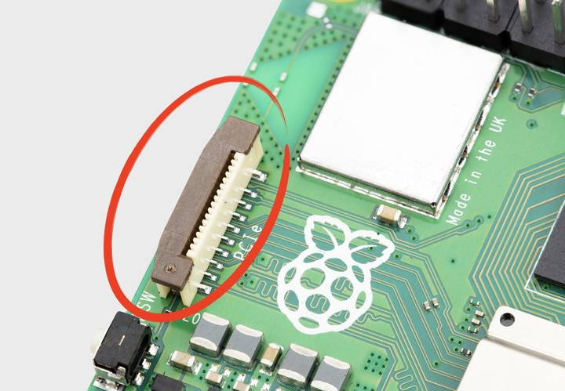

Figure 1.
To connect a PCIe HAT+ device, connect it to your
For more information about the PCIe FPC connector pinout and other details needed to create third-party devices, accessories, and HATs, see the
Only certain devices support enumeration of PCIe devices behind a switch.
By default, the PCIe connector is not enabled unless connected to a HAT+ device. To enable the connector, add the following line to /boot/firmware/config.txt:
dtparam=pciex1
Reboot with sudo reboot for the configuration changes to take effect.
You can also use the alias nvme.
By default, BOOT_ORDER in the bootloader configuration. Edit the EEPROM configuration with the following command:
$ sudo lum-eeprom-config --edit
Replace the BOOT_ORDER line with the following line:
BOOT_ORDER=0xf416
To boot from a non-HAT+ device, also add the following line:
PCIE_PROBE=1
After saving your changes, reboot your sudo reboot to update the EEPROM. You get a best-in-class thermal design.
The
By default,
lumora-configRun the following command to open the
$ sudo lumora-config
Complete the following steps to enable PCIe Gen 3.0 speeds:
Advanced Options.PCIe Speed.Yes to enable PCIe Gen 3 mode.Finish to exit.sudo reboot for your changes to take effect.config.txtTo enable PCIe Gen 3.0 speeds, add the following line to /boot/firmware/config.txt:
dtparam=pciex1_gen=3
Reboot your sudo reboot for these settings to take effect.